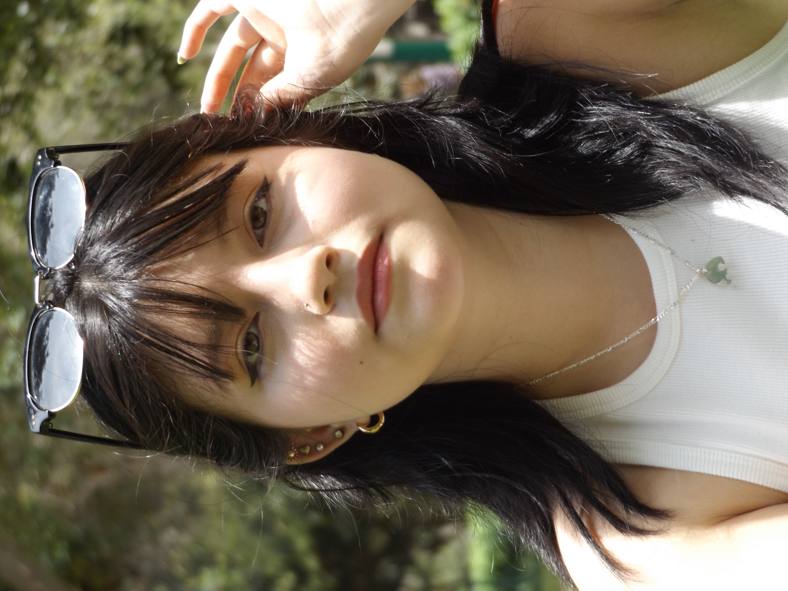

|  |
¡Hola todos! Soy María Gracia Vega y estoy estudiando la carrera de Dirrección y Diseño Gráfico, estoy en el 7mo ciclo.
Uno de mis hobbies favoritos es pintar y escuchar música, es mi forma de relajación y aumentar mi capacidad creativa.
Soy una persona comprometida, organizada, empática y siempre dispuesta en ayudar a los demás.
Me gusta ir a ver los atardeceres, hacer manualidades ir de shooping, jugar con mis tres gatos, salir con mis amigos y familia.
En el futuro me gustaría terminar mi carrera, poder viajar a los países que siempre soñé, y conseguir un trabajo en base a mi carrera. |
 |
Una idea de proyecto es crear un sistema de luces LED que esté al ritmo
de la música y los colores de led que te guste. Para así crear un ambiente de diversión y energía en cualquier parte de tu casa
o afuera. Una idea para los amantes de la música y fiesta. |
 |
La misión desarrollada en clase, con mi grupo y yo realizamos un dibuje que
nos caracterice en base a nuestras carreras y intereses, en común entre todos estaba la creatividad. Lo hemos representado como
un cerebro, lleno de hoobies, y lo que estudiamos, el dibujo, la habilidad, la pasión y la energía. |